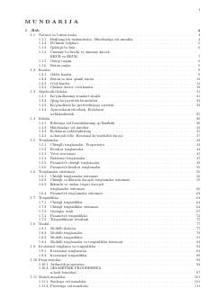

OTMatematika fanidan 1996-2007 yillar testlari va ularning yechimlari to'plami.
Ushbu qo'llanma 1996-2007 yillar oralig'idagi matematika fanidan test topshiriqlari va masalalar yechimlarini o'z ichiga oladi. Kitobda natural sonlar, kasrlar, tenglamalar, funksiyalar va boshqa mavzular bo'yicha batafsil bo'limlar keltirilgan bo'lib, abituriyentlarga imtihonlarga tayyorgarlik ko'rishda yordam beradi.